A dining room doesn't get redecorated often, which makes the mirror choice worth more thought than it usually gets.
The right one makes the room feel bigger, brighter, and considerably more finished. These 10 styles cover the range.
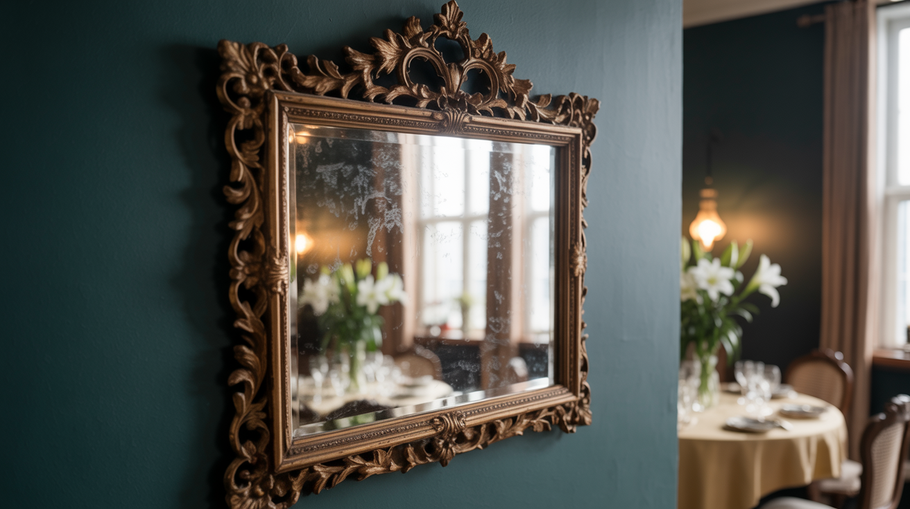

1. Art Deco-Inspired Mirror
An Art Deco mirror, with its geometric lines and often metallic accents, brings genuine glamour and a vintage-luxe quality to the room.
This style pairs especially well with a dining room already leaning toward richer colors or metallic finishes elsewhere.
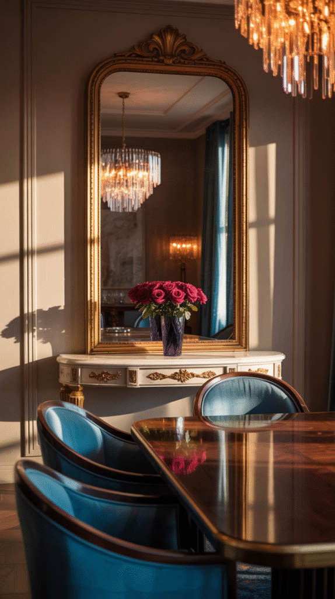
2. Frameless Beveled Mirror
A frameless beveled mirror brings a clean, understated elegance that lets the room's other furniture and decor take the visual lead.
The beveled edge still catches light in a subtle way, keeping it from reading as plain despite the minimal design.
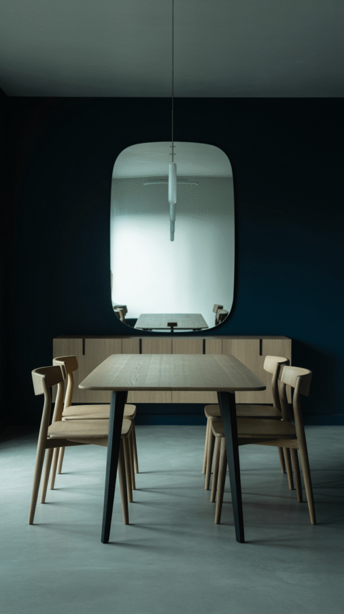

3. Geometric Mirror Set
A cluster of smaller geometric mirrors creates a gallery-wall effect while still delivering all the light-reflecting benefit of a single large piece.
This option suits a dining room that wants visual interest spread across more of the wall, rather than concentrated in one spot.
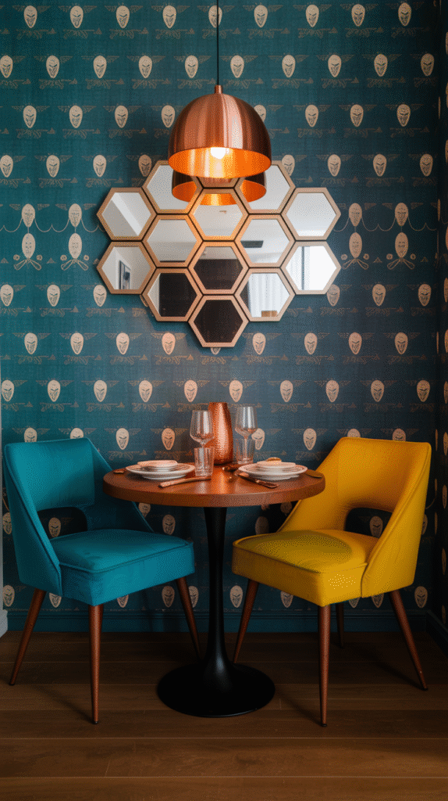
4. Sunburst Mirror
A sunburst mirror turns the piece itself into genuine wall art, well beyond its basic function as a mirror.
It works especially well as a single bold statement piece, rather than one of several competing decor elements on the same wall.
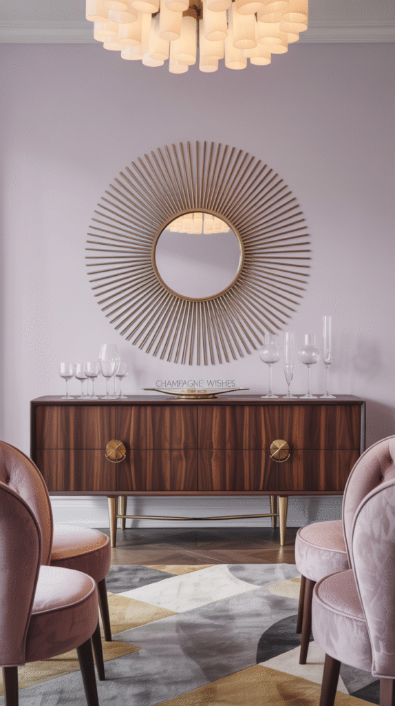
Large Gold Sunburst Starburst Wall Mirror, 31 Inch
Shop on Amazon5. Carved Wood Mirror
A carved wood frame brings genuine craftsmanship and warmth, especially well-suited to a more traditional or bohemian dining space.
Each piece tends to have real individual character, which a mass-produced frame style usually can't replicate.
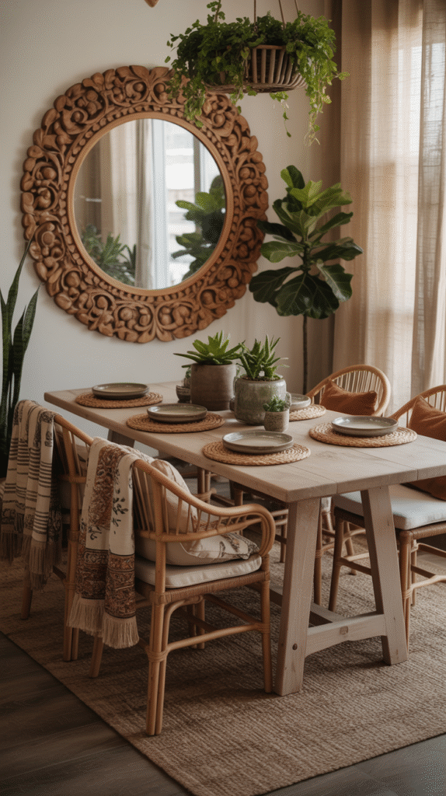
6. Black Metal Grid Mirror
A black metal grid frame brings a sleek, modern edge that works especially well in a more minimalist or industrial-leaning dining room.
The dark frame also creates real contrast against a lighter wall, giving the mirror definition a frameless version wouldn't have.
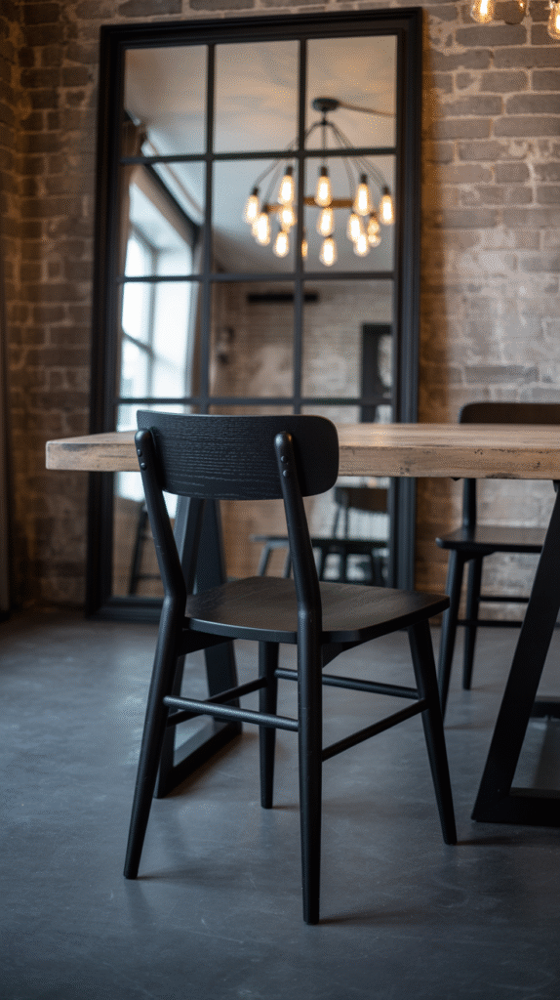
7. Windowpane Mirror
A windowpane-style mirror, divided into a grid like real window panes, brings genuine architectural interest to a wall with no actual window.
It's especially effective in a dining room that lacks natural light, since it visually suggests a window where there isn't one.
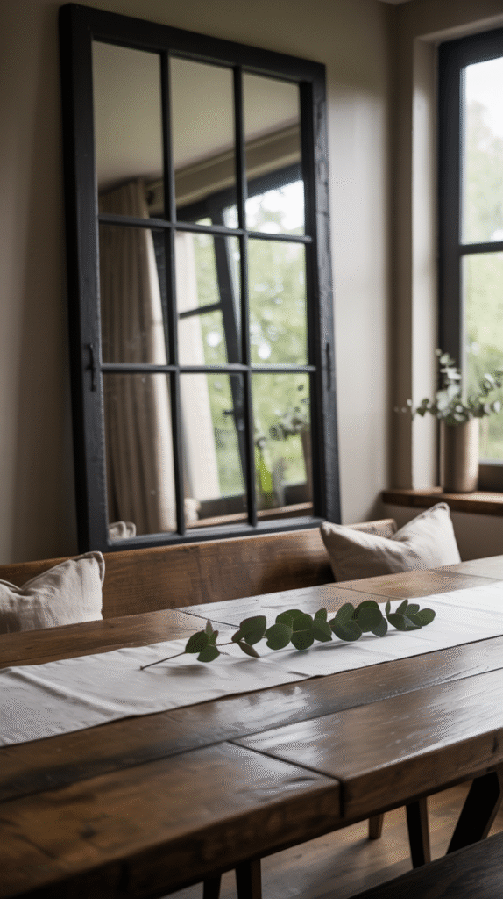
8. Minimalist Round Mirror
A simple round mirror softens a room full of rectangular furniture and sharp angles, without competing for attention.
This is one of the most versatile options here, fitting almost any existing style rather than demanding the room build around it.
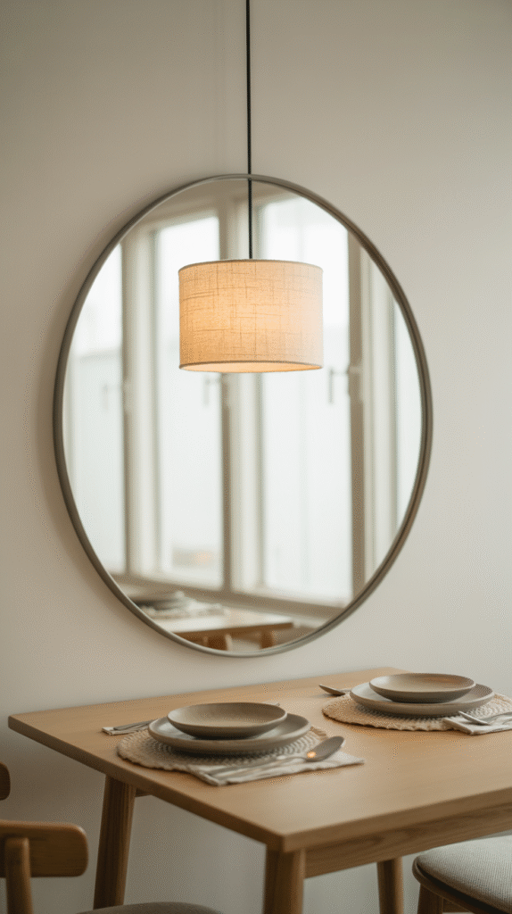

9. Antique Gold Framed Mirror
A gold frame brings warmth and a touch of old-world elegance that pairs naturally with wood furniture and warmer lighting.
This option tends to age well stylistically, rarely looking dated the way trendier frame finishes sometimes do.
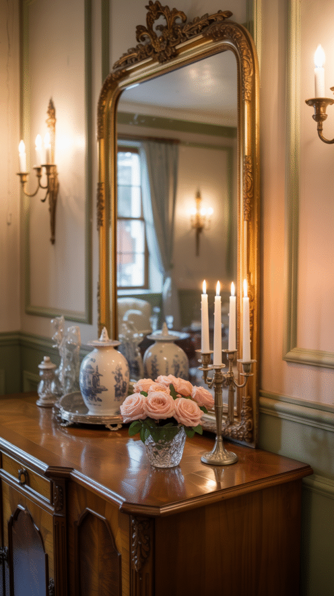
10. The Oversized Arch Mirror
An arch mirror brings a soft, architectural shape that reads as more intentional than a standard rectangle, and its scale alone makes a real statement.
This works especially well against a plain wall that needs one strong focal point rather than several smaller details.
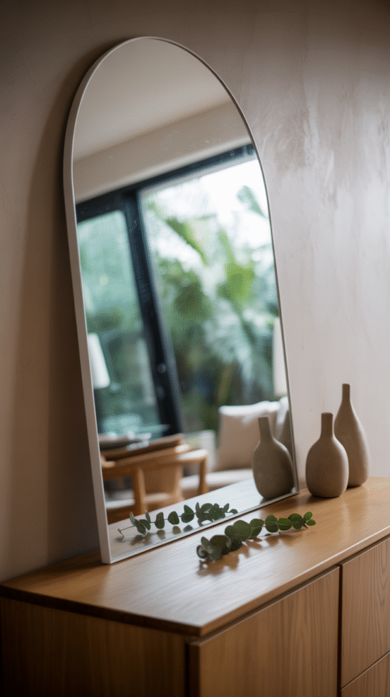

An Instant Dining Room Upgrade
None of these 10 styles is universally correct. The right one depends on the room's existing furniture, lighting, and overall mood.
Whichever gets chosen, a well-placed mirror remains one of the fastest ways to make a dining room feel brighter and more finished.
Where and How to Hang It
Centering the mirror above a buffet or console, roughly at eye level, is the most reliable placement across nearly every dining room layout.
Positioning it to reflect a window or a light fixture also does real work, amplifying whatever natural or ambient light the room already has.
Measure twice before drilling anything. A mirror hung a few inches off center is one of those small mistakes that's surprisingly hard to ignore once it's noticed.